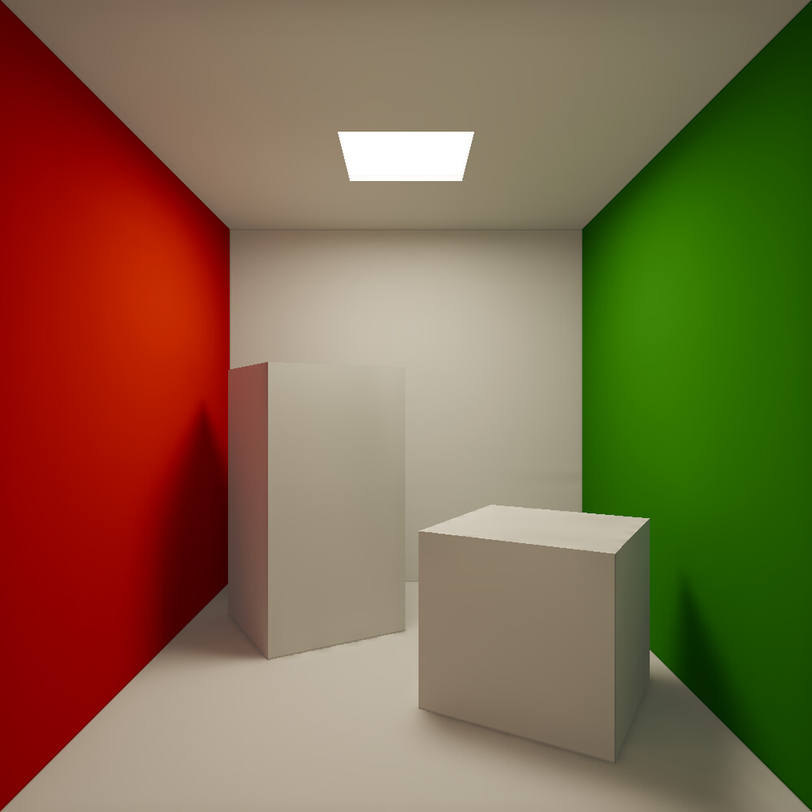
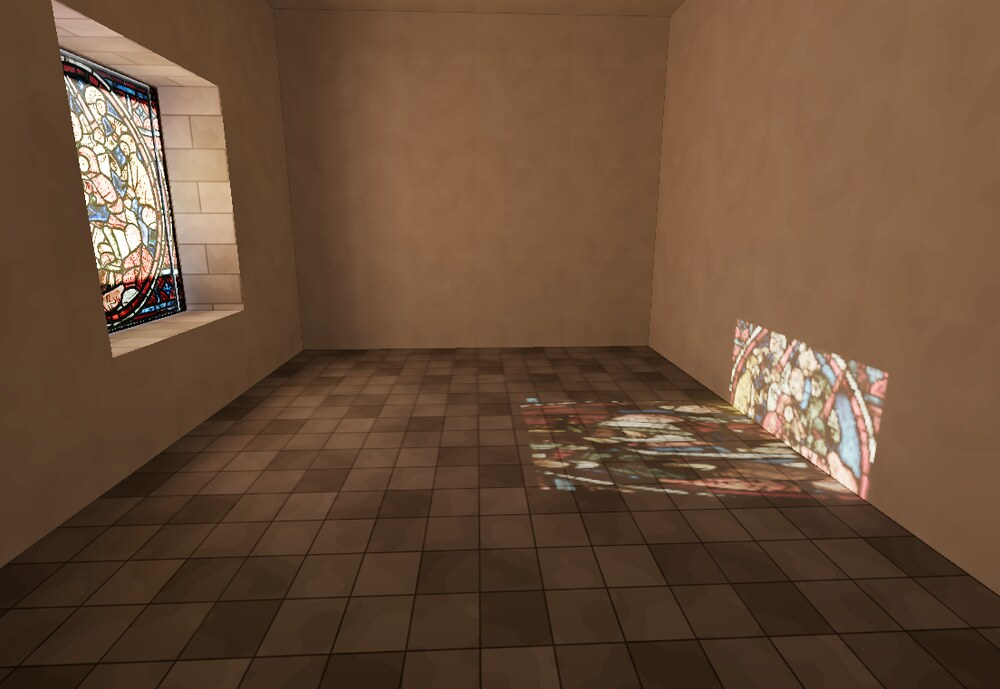
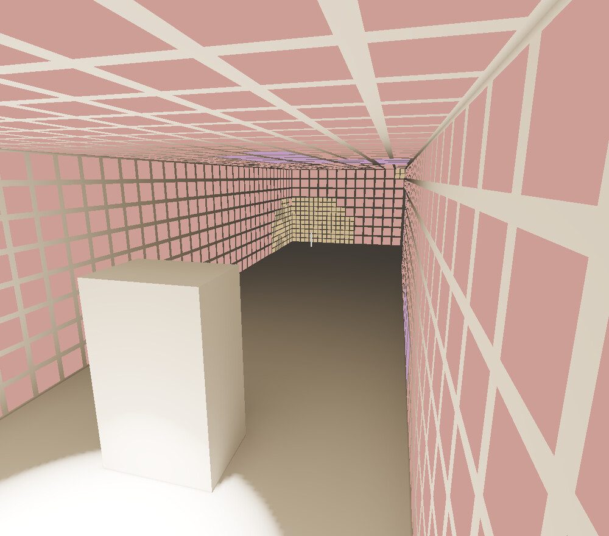
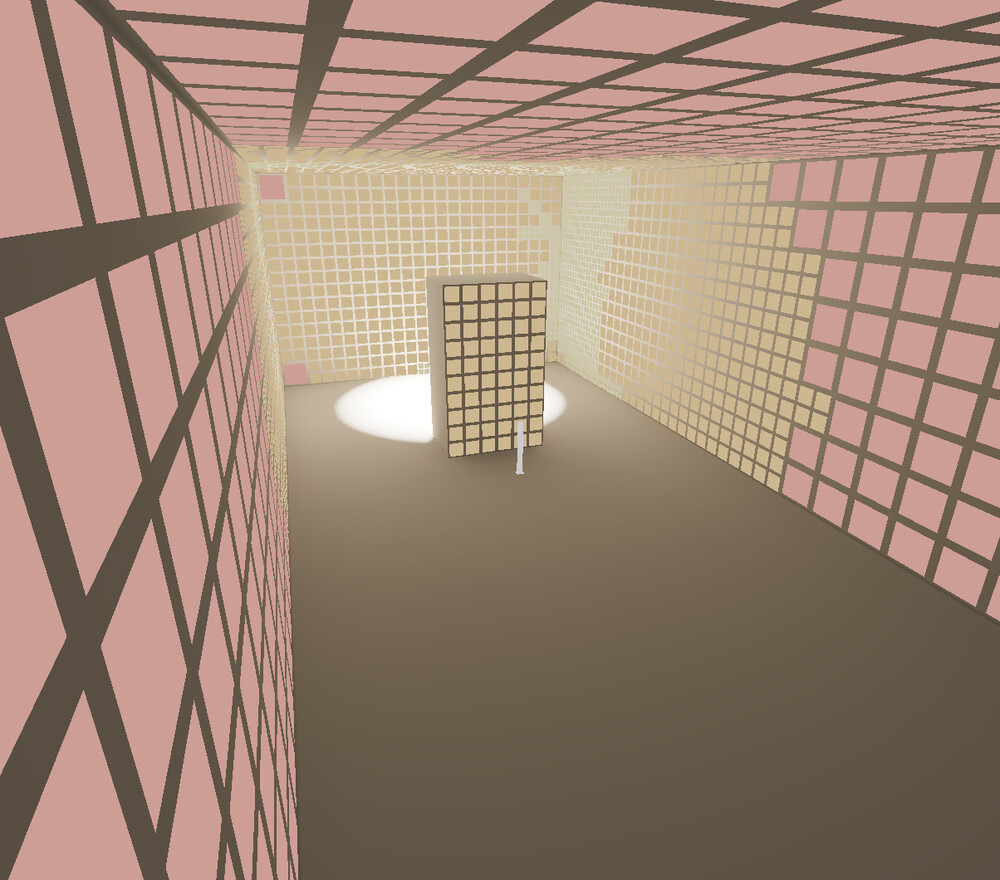
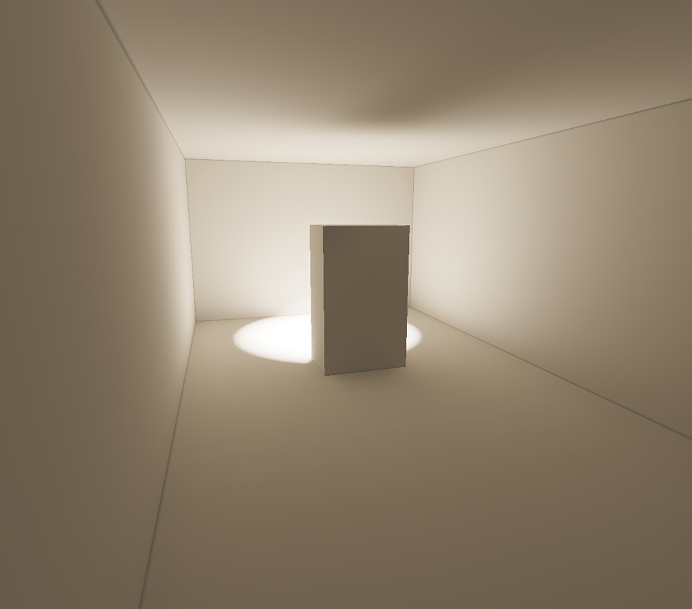
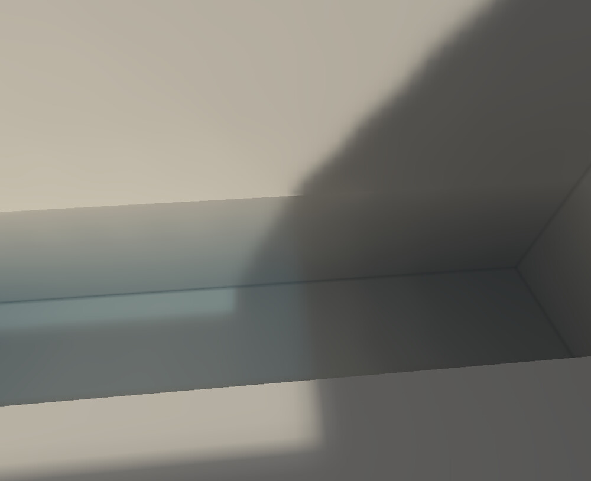

Hammerite's lightmapper
Hammerite bakes light into lightmaps on the GPU: direct light with soft shadows, and bounced light by hierarchical radiosity between the walls. A stealth game also needs light that changes while the game runs, so every surface holds four switchable lights next to its static light, and the switchable light bounces in colour too. This post goes through the whole pipeline, step by step.

Why lightmaps
City of Thieves is a stealth game, so light is gameplay. The player hides in shadow, and the guards see them depending on how lit they are. That needs light that looks good, but also light the game can measure, and lamps that can be switched off, flicker or be put out.
Baked light does the first part well: soft bounced light and colour coming off the walls, at no cost at runtime. Real-time lights do the second part, but they are expensive and do not bounce. So Hammerite bakes everything it can, and makes the baked light switchable.
The first version, in 2024, did radiosity on the CPU, and it did not scale. Classic radiosity trades light between every pair of patches that can see each other, so the work grows with the square of the level. In 2025 I moved the whole bake to the GPU, as compute shaders, and relayed the bounce through light probes. In 2026 the bounce went back to the walls, as hierarchical radiosity, which gives each pair of surfaces only as much detail as the light between them needs.
The pipeline
A bake has four parts. The level is prepared on the CPU, the light is transferred on the GPU, the results are written into atlases on the CPU, and a shader puts it all together every frame.
The bake runs inside the editor, on a fiber that gives the editor a frame every 100 ms, and the GPU work is cut into slices of about a tenth of a second so that the operating system's GPU watchdog never kills it. A cancelled bake puts the old lighting back.
Preparing the level
Probes. Things that move, a guard or a crate, are lit from light probes, so they are placed first. Surface probes sit on a 64-unit grid over every wall and every face of detail brushwork, one unit out into the air. Volume probes sit on a 64-unit lattice through the air, kept away from the walls. Both are irradiance probes: they measure the light that arrives at a point.
Lights. Every light is static or switchable, decided by its entity type. Switchable lights are put into light groups: lights with the same group name share one slot and are switched together, and a light with no group gets one of its own.
BVHs. Shadows need a fast way to ask what a ray hits. Hammerite's world is made of convex brushes, so the occluders are the convex pieces of rock that the subtractive compiler produces, plus detail brushes. They go into a bounding volume hierarchy, split at the median of the longest axis, and a ray is clipped against each convex brush's planes, which is cheaper than testing its triangles. Props are triangle meshes, so they get a second BVH, and their triangles are tested with Möller–Trumbore.
UV2 and charts. Every surface that takes light gets its own lightmap coordinates. Walls are flat polygons, so each one is projected onto the axis plane it faces most, at a fixed density: by default one texel per 16 world units on walls and one per 8 on props, and a face can have its own scale. Detail faces that go on into each other, in one plane or smooth across a bend of less than 60 degrees, are laid out together as one chart, so their light runs across the seam.

Texels. Each texel gets a position, a normal and a reflectance, which is the albedo of the texture under it, converted from sRGB to linear. The texels of each room's walls are then grouped into trees of squares for the bounce, described below. A ring of padding texels goes around every face. How much light a padding texel keeps depends on what meets the face at that edge: all of it past an open edge, none of it behind a wall that stands against it. This keeps a wall's light from bleeding under the floor next to it.
Direct light and shadows
The first GPU pass lights every patch from every light that can see it. Each texel casts four shadow rays per light, at fixed points of a rotated grid across the texel, and averages them. A texel that a shadow edge crosses comes out partly lit, which is where the soft edges come from. The grid is the same for every texel and every bake, so there is no noise.
Point lights fall off with the inverse square of the distance, measured in metres, and a light can be given a radius past which it fades out. Spot lights use Godot's own cone curve, so a baked spot matches a real-time one. A shadow ray can go through up to three surfaces that let light through, such as masked textures, tinted glass or water, and it takes their colour on the way.
Daylight works differently. Faces textured as sky are openings in the rock, not blockers. A texel is in sunlight when a ray towards the sun reaches a sky face before it hits rock, and every sky face also gives off the sky's own light.

The sun patch is hundreds of times brighter than the walls around it, and the bake keeps all of it, in half floats. What the screen makes of that is up to the tonemapper. Godot's default, with no Environment, cuts everything above white off flat, so a patch of sun becomes a white shape. A filmic one such as AgX rolls the brightest light off the way a camera does. The guide Rendering HDR lightmaps has the details.
Static light is kept in full RGB. Switchable light is kept as a single brightness per slot, the BT.709 luma of the light, because its colour is applied when the level is drawn. That is what lets a lamp change colour at runtime.
Light through glass
A texture whose name starts with ! can be seen through wherever its alpha is below
one. Most are cut-outs, a grate or a railing, opaque or clear, but nothing stops the alpha from
lying in between, and the bake reads it as glass. When a shadow ray crosses such a face it looks up
the texel it hit. The alpha a says how much of the light the glass covers, and the colour c tints
the part it covers:
through = (1 − a) · mix(1, c, a)
The colour is weighted by the alpha because the colour under an alpha of zero is whatever the image editor left there, usually black, which would make a clear hole as dark as a lead bar. A ray goes through up to three such surfaces and takes the colour of each. A pane built as a thin brush is crossed twice, by its front face and its back face, so its colour counts twice.

To make the texture, the lead and the painted lines were given an alpha of 1 and the glass 0.85, and the glass's colour was scaled up to full strength, since the alpha already says how dark it is. The bake samples the texture at its own resolution, so the figures land on the floor sharp, as long as the floor's texels are fine enough to hold them. The coloured light then bounces like any other, and the walls around the room take a little of its warmth.
Bounce: hierarchical radiosity
In classic radiosity every patch sends light to every other patch it can see, weighted by the form factor, the share of one surface that another one sees:
F = cos θs · cos θr · As / (π d²)
With millions of texels that is far too many pairs. Quake 2's radiosity cut the walls into patches of one size, 64 units across by default, and traded light between every pair of them. That keeps the pairs down, but a shadow cast by bounced light is then a blur 64 units wide, and halving the patches makes sixteen times the pairs.
Hammerite uses hierarchical radiosity, after Hanrahan, Salzman and Aupperle. Each room's walls in each plane become a quadtree of squares on the lightmap's texel grid, from the whole wall down to 8 units or one texel. Each prop becomes an octree of cubes. And each room as a whole is a cluster of all of them, which only sends, like a body giving off light evenly in every direction.
Two nodes are joined by a link at the coarsest level where little light passes between them. How much could pass is the receiver's albedo and area, times the sender's light, times the largest form factor the two could have if they were as close as their sizes let them be. When that is more than a hundredth of what a leaf throws back, the larger end is split into its children and each is tried again. A far, dim wall reaches a whole room in one link, while a near, bright one is linked square by square.

From the far end of the hall

Beside the pool of light
The links are made twice. First against the direct light, and then against what two bounces over those links add, because by the direct light alone every wall the lamps miss looks dark, and would be linked coarsely. A link that sees its sender only in part is split, up to three more times, until each one sees all of it or none. That is what gives a shadow cast by bounced light its edge.
What a link sees is traced with sixteen rays between texels of its two ends, spread over both so that the first rays already cross both of them, and more for a link that carries a lot of light. It is kept in half a byte per link.

A bounce is four GPU passes over the nodes:
- Gather. Every node collects what its senders send over its links: their light, times what they throw back, times the form factor and what the link sees.
- Push. What reached each node goes down its tree. A child takes it from the nine squares around its parent, weighted by a quadratic B-spline, so light that lands high in a tree lies on the wall smoothly rather than in squares.
- Keep. The leaves add it to what they have had, and send it next.
- Pull. What the leaves send is summed back up their trees, so a link to a large square sends what all of its leaves do.
The bounces run until one adds less than 1% of the light, up to 32 of them. Then every texel takes the nine leaves around it on its wall, again with B-spline weights, so the light bends nowhere.
Light keeps its colour on the way. What a node sends carries the colour that light arrived in, as well as the colour of its own wall, so a white floor lit by a red wall throws red light on.
The cost grows with the detail that matters. Twice the lightmap resolution makes four times the leaves, and on a test room the links grew 4.04 times, where patches of one size would have needed sixteen. A closed grey room gives back 0.995 of what infinitely many bounces can, where patches of one size gave back 0.94. The probe bounce Hammerite used before gave back 1.08 at four bounces, more light than a room has, and a hall under a lamp grew brighter with every bounce after that.
The probe bounce is gone now. Probes are still baked for the things that move, but they no longer bounce light between themselves and paint it back onto the walls. Once the walls' bounce has settled, each probe gathers once from the walls around it, so a guard is lit by the light the walls show.
Four light slots
Each atlas has a static texture in RGB, for the light that never changes: static lamps, daylight, glowing textures and all of their bounce. Next to it is a slot texture in RGBA, which holds up to four switchable lights, one in each channel, each at full strength and without colour. Both are kept in half floats.
Below is the slot atlas of a room with four switchable lamps in its corners. Pick a channel to see one lamp's light on its own, as it is stored. All shows the four together, each in its lamp's colour, the way the shader adds them up.


When the level is drawn, each slot is multiplied by its light's colour and current strength. Turning a lamp off, dimming it or making it flicker only changes one number, and nothing is baked again. A chandelier's candles share a light group, so they flicker as one, and a lightning flash lights every window at once.
Four is the limit per surface, the same as Quake's four light styles per face. Faces are grouped into atlases by the set of lights that reach them, with at most four in a set. When more than four light groups reach one face, the bake keeps the four that give it the most light and warns about the rest.
Colour bleed for switchable light
Static bounce is baked in RGB, so its colour bleed is simply there. A slot has no colour, so the colour of what bounced has to be kept beside it. Storing an RGB colour for every slot of every texel would multiply the size of the atlases, so Hammerite stores it in two small textures instead.
While the bounce runs, every texel keeps a chroma vector for each slot: the light of that slot that arrived coloured, in its colour. It is carried through every bounce at the same energy as the bounce itself, so its luma is exactly the bounced part of the slot, and it keeps the colour of every wall it came off. When the atlas is written, that becomes:
- A tint T: the sum of a texel's chroma vectors, scaled so its brightest channel is 1, in RGB8.
- A share Ks per slot: the chroma's luma over the slot's light, so the part of the slot's light that arrived in the tint's colour, in RGBA8.
That is 7 bytes a texel for all four slots. The shader colours each slot's light like this:
lights = colours · Ls · mix(1, T / luma(T), Ks)
The lamp's direct light keeps the lamp's colour, and only the bounced share takes the tint, at the same brightness. Light that came through tinted glass or water is counted as coloured too. It is exact when every slot of a texel bounced in the same colour, which is nearly always the case, since they bounced off the same walls.
Here is the box lit by switchable light instead: sixteen lamps under the ceiling in one light group, so one slot, with the colour bleed off and on.

 Off
On
Off
On

Tint

Share of the slot that bounced
Water: refraction, caustics and reflection
Water is a fill: an air brush that holds water instead of nothing, with a clarity, a tint and a disturbance. The bake treats its surface as one more surface a shadow ray can go through, and does four more things with it.
Refraction. Light going into water bends towards the vertical, so for a texel under the water, the straight line to a lamp above is not the path the light takes. The bake finds where the real path crosses the surface: the point where the sines of the two angles are in the ratio of the refractive indices, 1.333 for water. It finds it by halving the interval along the line between the lamp and the texel 24 times, and then casts the two legs of the path as shadow rays. The bent beam also spreads less, so seen from under the water the lamp is nearer than the path is long. Part of the light never gets in. Schlick's approximation of the Fresnel term, with F0 = 0.02, decides how much is reflected off the surface: 2% straight down, and nearly all of it at a grazing angle. From below, past the critical angle, the surface is a mirror.

Tint. Light under water takes the water's colour by Beer–Lambert. The clarity says how far light goes before half of it is gone, from 16 units for silt to 128 for a clear spring.
Caustics. The bake does not trace the ripples. It stores how much of each light reaching a texel came through water, in a caustic texture next to the slots and the static light, and which water it came through: how disturbed its surface is, and how deep under it the light went. The shader draws the pattern itself: a caustic texture rippled by a travelling wave, added on top of the lit surface in proportion to the share of the light that is caustic. The pattern doubles in size for every 32 units of depth, and it flows away from the light that made it. The surface of the water ripples with the same pattern at the same speed, so the surface and the light under it never drift apart.
Caustics are measured only along real paths through the water, in the direct pass. They are not spread through the bounce, which would put them on walls that never saw the pool.
Reflection. A lit pool throws its own shape onto the walls and the ceiling. A pass after the direct light treats every texel of a water surface as a small mirror. The light it reflects goes one way, mirrored about the water's normal, into a cone as wide as the water is disturbed, and every texel of the room takes what lands on it. The sum of all of them is the pool's real shape: crisp off still water, a soft wash off running water. The bake also keeps how far the light was thrown, and the shader draws the reflected caustics larger the further the wall is from the pool, as it does with depth under the water. Far away stretches of pool are clustered, 128 units at a time, and checked with one ray. The reflected light bounces on like direct light, but its caustics do not: a wall lit by a pool's ripples scatters the light, not the pattern.

The surface. The water itself is drawn in screen space. What is behind it on the screen is read, moved by the slope of the rippling surface, and mixed with the surface's own lit colour by how much light survives the distance through the water to what is seen. Seen from below, the surface is lit by what is in the water, which the bake keeps in an underside texture of its own.
Writing the atlases
After the transfer, each face's slots are settled: each texel claims slots for the lights that reach it, and the face keeps the four groups with the most light. Faces are then grouped by their light sets, so faces that share the same lights end up in the same atlases, and packed into 512 by 512 atlases with two texels of padding. Props that share their lights also share atlases.
Every patch is written into its texels, and the edges are smoothed with a 5 by 5 bilateral filter. It is edge-preserving, so it softens the stair steps of a shadow without blurring light across a sharp change. A chart is filtered as a whole, so the filter runs over the seams between its faces too.
Last, the probes are saved with the map, compressed with Reinhard's x / (1 + x), for anything that moves.
How baked and real-time light meet
Hammerite's surface shader has Godot's ambient light and specular turned off. It works out the
baked light itself and writes it to EMISSION:
- The slots, each times its light's colour, its strength and its colour bleed, plus the static light and a small ambient floor.
- The light curve, which is how a game shapes the look of its light: a lookup table keyed by the light's brightness, and a lift for the shadows.
- Times the surface's albedo, and times the exposure.
The shader also sets ALBEDO, so Godot's own lights still light the surface through
its light() function. A torch the player carries is a real-time light, and it is added
on top of the baked light, through the same curve: the shader adds the difference between the
curve of baked plus real-time light and the curve of baked light alone. A torch lifts a dark room
the way more baked light would, and does not wash out a bright one.
A switchable light sends its strength to the surfaces it lights at most 30 times a second, each light at its own phase, and only while its room can be seen. A level full of flickering lamps costs little.
Things that move, like guards or a carried crate, have no lightmap. They are lit from up to eight probes around them, the same idea as the irradiance volume and Half-Life 2's ambient cube, so a guard gets the same light as the walls around them. The game can also ask the probes how lit a point is, which is what the stealth gameplay reads.
Baking while you work
A full bake runs inside the editor, which runs inside the game, so you can look at the result from where you stand. The editor stays responsive during the bake.
After an edit, walls that were moved or carved have no light until the next bake. A quick bake lights just those walls with direct light, and leaves everything else as it was. On a large imported level with 736 lamps a quick bake takes about a second.
The panel has presets. Simple is direct light alone, Thief the same with a linear falloff, and Fancy, the default, turns on everything: bounces, water reflections and caustics. Your own settings can be saved as presets of your own.

Reproducible bakes
Two bakes of the same level give the same result, bit for bit. It took two fixes. Slots used to be handed out by atomic compare-and-swap in whatever order the GPU threads arrived, so a face lit by more than four lights could keep a different four from one bake to the next. Now each texel claims its slots privately and the face settles them afterwards, brightest first and lowest group on a tie. And the gather and the bounces are cut into parts sized to the GPU's speed, which changed where floating-point sums were rounded. Each probe now keeps one running sum across the parts. On a large imported level, two bakes used to differ on all but a few hundred of its 128,767 surfaces.
The bounce between the walls holds to the same. Its sight rays are random, but from seeds of each link's own, so they are the same every time. And each pass stops at the end of its own dispatch: the GPU runs threads in groups of 64, and the last group of one depth of the trees used to run on into the next depth while its parents were still being written. Two bakes of one room differed on every texel, by up to 3%.
The native code is also built without fused multiply-add, so it rounds the same way on every machine.
Numbers
My reference level is large: 7,240 brushes, about 130,000 walls, 4.4 million patches, 54,000 probes and 736 lights. Its walls make 2.9 million nodes, two million of them leaves, joined by 54 million links, and the bounce takes about two and a half minutes. A full bake used to take over two and a half hours. The gather clustering and writing the atlases in native code brought it to about 22 minutes on a GTX 1070 Ti, with the probe bounce Hammerite used then.
Limits
- A lightmap stores how much light reaches a texel, not where it came from. Normal maps only react to switchable lights, carried lights and probes.
- Baked surfaces have no specular reflections.
- At most four switchable light groups can reach one surface.
- Glowing textures are static. A light that has to move is a real-time light, not a baked one.
- The colour bleed of switchable light has one tint per texel, shared by its four slots.
Prior art
None of this is new. These are the papers and games it comes from:
- Cindy M. Goral, Kenneth E. Torrance, Donald P. Greenberg and Bennett Battaile. Modeling the interaction of light between diffuse surfaces. SIGGRAPH 1984. Radiosity in computer graphics, and the first Cornell box.
- Michael F. Cohen, Shenchang Eric Chen, John R. Wallace and Donald P. Greenberg. A progressive refinement approach to fast radiosity image generation. SIGGRAPH 1988. Shooting unshot energy, one pass at a time.
- Pat Hanrahan, David Salzman and Larry Aupperle. A rapid hierarchical radiosity algorithm. SIGGRAPH 1991. Linking two surfaces only as finely as the light between them needs, which is the bounce.
- Brian Smits, James Arvo and Donald Greenberg. A clustering algorithm for radiosity in complex environments. SIGGRAPH 1994. A group of surfaces sending as one, as a room's cluster does.
- Michael F. Cohen and John R. Wallace. Radiosity and Realistic Image Synthesis. Academic Press, 1993.
- Ian Ashdown. Radiosity: A Programmer's Perspective. Wiley, 1994.
- Hugo Elias. Radiosity. A short, practical introduction to radiosity for lightmaps, much read on the early web.
- Gene Greger, Peter Shirley, Philip M. Hubbard and Donald P. Greenberg. The irradiance volume. IEEE Computer Graphics and Applications, 1998. Light probes in the air for things that move.
- id Software. Quake II tools, 1997. qrad3, radiosity between patches of one size cut from the walls.
- id Software. Quake, 1996. Lightmaps with up to four light styles per face, switched and animated at runtime.
- Gary McTaggart. Half-Life 2 / Valve Source shading. GDC 2004. The ambient cube for lighting models from the baked world.
- Tomas Möller and Ben Trumbore. Fast, minimum storage ray/triangle intersection. Journal of Graphics Tools, 1997.
- Carlo Tomasi and Roberto Manduchi. Bilateral filtering for gray and color images. ICCV 1998.
- Erik Reinhard, Michael Stark, Peter Shirley and James Ferwerda. Photographic tone reproduction for digital images. SIGGRAPH 2002.
The Hammerite docs have more about lighting and baking, including baking from a script in a build pipeline.
- Elli